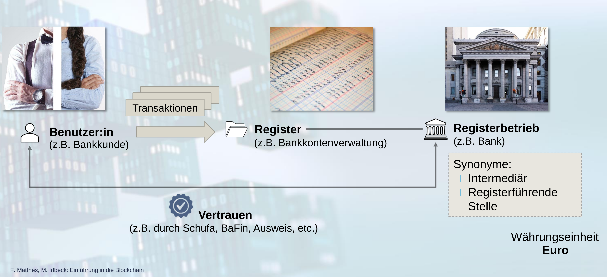

<!DOCTYPE html>
<html lang="en">
  <head>
    <meta charset="utf-8" />
    <meta name="viewport" content="width=device-width, initial-scale=1.0, maximum-scale=1.0, user-scalable=no" />

    <title>Kryptowährungen und digitales Zentralbankgeld</title>
    <link rel="shortcut icon" href="./favicon.ico" />
    <link rel="stylesheet" href="./dist/reset.css" />
    <link rel="stylesheet" href="./dist/reveal.css" />
    <link rel="stylesheet" href="/_assets/theme/ydark.css" id="theme" />
    <link rel="stylesheet" href="./css/highlight/zenburn.css" />


  </head>
  <body>
    <div class="reveal">
      <div class="slides"><section  data-markdown><script type="text/template">

# Kryptowährungen und digitales Zentralbankgeld

<small>*Ein Vortrag von <a href="wiyogo.com">Yongkie Wiyogo</a>*</small>
</script></section><section ><section data-markdown><script type="text/template">
## Motivationen

 <!-- .element height="800" -->

https://t.me/dieBasis_Karlsruhe_Chat/14794

  </script></section><section data-markdown><script type="text/template">
* Bedeutet Bargeld wirklich Freiheit?      
* Was ist digitales Geld?                  
* Verbirgt digitales Geld Gefahren für uns?
</script></section></section><section  data-markdown><script type="text/template"><section id="Timeline" data-background-iframe="https://cdn.knightlab.com/libs/timeline3/latest/embed/index.html?source=1iQ-pvw-oRB8MmwWXHwEdsPstTcDelG7Rfa4wDPJKUKE&font=Default&lang=de&initial_zoom=4&height=900" />
</script></section><section  data-markdown><script type="text/template">## Das konzept eines zentralen Kassenbuch

 
</script></section><section  data-markdown><script type="text/template">
## Kritik an dem zentralen Kassenbuch
<br>

* Abhängigkeit von Zentralbanken.
* Die (umstrittene) Entscheidungsträger sind nicht von dem Volk gewählt.
* Nicht mehr von Gold oder reale Werte gekoppelt (Abschaffung der Goldstandard).
* Das unkontrollierte Gelddrucken führt zu einer Entköpplung der Kapitalmärkte von der Realwirtschaft.
</script></section><section  data-markdown><script type="text/template">## Gibt es überhaupt eine Alternative?
</script></section><section  data-markdown><script type="text/template">## Kryptowährung?
<br>

Kryptowährung = <span class="fragment visible current-fragment" style="color: #9AD0FF;" data-fragment-index="1">Kassenbuch von Transaktionen</span>  + <span style="color: #99FF99;" class="fragment visible current-fragment" data-fragment-index="2">Kryptography</span>
</script></section><section  data-markdown><script type="text/template">## Blockchain
<br>

* Alle Transaktionen werden in einem digitalen Kasssenbuch gespeichert. <!-- .element: class="fragment" data-fragment-index="2" -->
* Das digitale Kassenbuch wird auch als "Blockchain" genannt, weil die Transaktionen in verketteten digitalen Blöcken abgespeichert werden. <!-- .element: class="fragment" data-fragment-index="3" -->
* Anstatt in einem Rechner werden die Transaktionen von tausenden Rechnern in einem Netzwerk verifiziert und abgespeichert. <!-- .element: class="fragment" data-fragment-index="4" -->

</script></section><section  data-markdown><script type="text/template">## Blockchain-Typen

1. Offene Blockchain
2. Geschlossene Blockchain
3. Hybrid Blockchain
</script></section><section  data-markdown><script type="text/template">Der Geburt der ersten Kryptowährung mit dem offenen Blockchain

<embed class="stretch"
                    src="https://bitcoin.org/bitcoin.pdf" width="100%"
                    height="900vh" alt="pdf" pluginspage="http://www.adobe.com/products/acrobat/readstep2.html">
</script></section><section  data-markdown><script type="text/template">
<iframe class="stretch"  src="https://www.youtube.com/embed/sGBKSnA9Qs4?t=121" title="Aber wie Funktioniert Bitcoin?" frameborder="0" allow="accelerometer; autoplay; clipboard-write; encrypted-media; gyroscope; picture-in-picture" allowfullscreen></iframe>

</script></section><section  data-markdown><script type="text/template">## Selbst Erkundung
<br>

https://www.bitrawr.com/bitcoin-node-map 

https://www.blockchain.com/btc/blocks
</script></section><section  data-markdown><script type="text/template">## Geschlossene Blockchain / Zentrale Kryptowährung
<br>

* Die verwendete Blockchain-Technologie wird nicht offen publiziert.
* Die daraus resultierte Kryptowährung ist von einer bestimmten geschlossenen Gruppe, Stiftung oder einem Institut kontrolliert.
* auch als _Distributed Ledger Technology (DLT)_ genannt
* Beispiel: Ripple, Terra Luna, IBM Blockchain, Facebook Diem (ehemals Libra), Central Bank Digital Currency
</script></section><section  data-markdown><script type="text/template">## Central Bank Digital Currency

<embed class="stretch"
                    src="assets/FTNEA2022004.pdf" width="100%"
                    height="900vh" alt="pdf" pluginspage="http://www.adobe.com/products/acrobat/readstep2.html">
</script></section><section  data-markdown><script type="text/template">## Edward Snowden zu CBDC

<br>

_"Vielmehr werde ich Ihnen sagen, was ein CBDC NICHT ist – es ist NICHT, wie Wikipedia Ihnen sagen könnte, ein digitaler Dollar. Schließlich sind die meisten Dollars bereits digital und existieren nicht als etwas, das in Ihrer Brieftasche gefaltet ist, sondern als Eintrag in der Datenbank einer Bank, der gewissenhaft angefordert und unter dem Glas Ihres Telefons wiedergegeben wird. Eine digitale Währung der Zentralbank ist auch keine Umarmung der Kryptowährung auf staatlicher Ebene – zumindest nicht der Kryptowährung, wie so ziemlich jeder auf der Welt, der sie verwendet, sie derzeit versteht."_

<br>

https://edwardsnowden-substack-com.translate.goog/p/cbdcs?_x_tr_sl=auto&_x_tr_tl=de&_x_tr_hl=en, 09.10.2021

</script></section><section  data-markdown><script type="text/template">## Kryptowährung mit starkem Datenschutz
<br>

* Monero (XMR)
* PRivaCY Coin (PRCY)
* ZCash (ZEC)
* Pirate Chain (ARRR)
</script></section><section  data-markdown><script type="text/template">## Legalität der Kryptowährung Weltweit
<br>

* Mehrere Verbote in China seit 2009
* Transaktion-Verbot in Algerien, Bolivien, Ägypten, Irak, Marokko, Nepal, Pakistan, Vietnam und die Vereinigten Arabischen Emirate, Bahrain, Bangladesch, China, Kolumbien, Dominikanische Republik, Indonesien, Kuwait, Lesotho, Litauen, Macau, Oman, Katar, Saudi-Arabien und Taiwan.
* Offiziel eingeführt in El Salvador und Zentralafrikanische Republik
* In 2022 akzeptiert Ukraina Bitcoin als Spende für Krieg gegen Russland

</script></section><section  data-markdown><script type="text/template">
## Nutzer der Kryptowährung
<br>

* [Wikileaks](https://shop.wikileaks.org/donate): Bitcoin, Litecoin, Monero, Zcash, Ethereum
* [Reitschuster.de](https://reitschuster.de/unterstuetzung): Bitcoin
* [OVALmedia](https://www.oval.media/spendendetails/): Bitcoin und Monero
* und noch viel mehr ...
</script></section><section  data-markdown><script type="text/template">## Bargeld oder Bargeldlos

<embed class="stretch"
src="https://www.mckinsey.com/~/media/mckinsey/industries/financial%20services/our%20insights/accelerating%20winds%20of%20change%20in%20global%20payments/2020-mckinsey-global-payments-report-vf.pdf" width="100%"
height="900vh" alt="pdf" pluginspage="http://www.adobe.com/products/acrobat/readstep2.html">
</script></section><section  data-markdown><script type="text/template">## Bitcoin zusammengefasst
<br>

* Bitcoin ist ein verteiltes Peer-to-Peer-System => dezentrales System
* Bitcoin-Transaktionen werden in einer digitalen Blockkette (Blockchain) gespeichert
* 1 Block ~ 1900 Transaktionen
* Maximalvorrat: 21.000.000 BTC Coins -> wie digitales Gold
* Bitcoin ist nicht 100% anonym.
* Man braucht weder Regierung noch Bank noch ein drittes privates Institut um das Geldsystem zu verwalten oder zu verifizieren
* Komplizierter Einstieg für nicht IT-ler
* Starke Volatilität (Kurs-Schwankungen)
</script></section><section  data-markdown><script type="text/template">## Fazit
<br>

* Nicht nur Bargeld bedeutet Freiheit, sondern auch Bitcoin und die anonymen Kryptowährungen.
* Bitcoin und die anonymen Kryptowährungen kann für eine parallele Gesellschaft benutzt werden (Schattenwirtschaft).
* Nur Kryptowährung mit geschlossenen Blockchain-Technologie verbergen Gefahren für unsere Demokratie und Freiheit.
</script></section><section  data-markdown><script type="text/template">
<div class="blue it">
Wenn Du innere Zufriedenheit hast, bist Du der reichste alller Menschen, selbst wenn man Dir alles stehlen würde.
</div>
<br>
<br>
<div class="blue it">
Wenn Dir aber diese Zufriedenheit fehlt, egal, wie reich Du sein magst, bist Du der Sklave Deines Reichstums.
</div>
<br>

<em>Nagarjuna</em>
</script></section><section  data-markdown><script type="text/template">## Fragen und Diskussion
<br>

Welches Geldsystem würden Sie denn gerne, zentrales oder dezentrales Geldsystem?

<br>

<div class="green fragment visible current-fragment">
Vielen Dank für die Aufmerksamkeit
</div>
<style>
.blue {
    color: #9AD0FF;
}
.red {
    color: #FF6666;
}
.green {
    color: #99FF99;
}
.it {
    font-style: italic;
}
</style></script></section></div>
    </div>

    <script src="./dist/reveal.js"></script>

    <script src="./plugin/markdown/markdown.js"></script>
    <script src="./plugin/highlight/highlight.js"></script>
    <script src="./plugin/zoom/zoom.js"></script>
    <script src="./plugin/notes/notes.js"></script>
    <script src="./plugin/math/math.js"></script>
    <script>
      function extend() {
        var target = {};
        for (var i = 0; i < arguments.length; i++) {
          var source = arguments[i];
          for (var key in source) {
            if (source.hasOwnProperty(key)) {
              target[key] = source[key];
            }
          }
        }
        return target;
      }

      // default options to init reveal.js
      var defaultOptions = {
        controls: true,
        progress: true,
        history: true,
        center: true,
        transition: 'default', // none/fade/slide/convex/concave/zoom
        plugins: [
          RevealMarkdown,
          RevealHighlight,
          RevealZoom,
          RevealNotes,
          RevealMath
        ]
      };

      // options from URL query string
      var queryOptions = Reveal().getQueryHash() || {};

      var options = extend(defaultOptions, {"width":1920,"height":1080,"controls":true,"progress":true,"history":true,"center":true,"slideNumber":true,"parallaxBackgroundImage":"images/backdrop.png","parallaxBackgroundSize":"2000px 1125px"}, queryOptions);
    </script>


    <script>
      Reveal.initialize(options);
    </script>
  </body>
</html>
